Terminal central UNAB - Nivel de autorización: Sala 6

"El teclado es más fuerte que la espada."
¿Qué sucede cuando la tecnología se convierte en el arma principal de la protesta social?
Objetivo: Iglesia de la Cienciología.
Acción: Ataques DDoS y filtración de documentos en protesta por la censura en internet.
Objetivo: Gobiernos mundiales (EE.UU. principalmente).
Acción: Filtración masiva de cientos de miles de cables diplomáticos.
Escanea el código para conectarte a la red:
El hacktivismo expone verdades y defiende derechos, pero lo hace rompiendo la ley y amenazando la estabilidad digital.
Las organizaciones modernas no solo deben protegerse de quien busca dinero,
sino de quien busca un mensaje.
[ OK ] Iniciando subsistema de preguntas...
[ OK ] Enrutando consultas a Sala 6...
[ OK ] Conexión segura establecida.
root@unab-sala6:~# ./preguntas_y_dudas.sh
> Analizando vulnerabilidades en la exposición...
root@unab-sala6:~/preguntas# Escriba su duda aquí
Facultad de Tecnología e Innovación · Universidad Dr. Andrés Bello